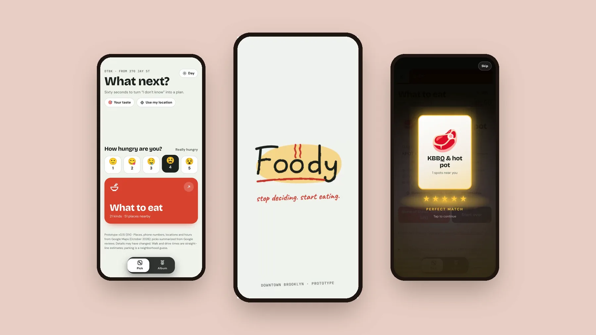
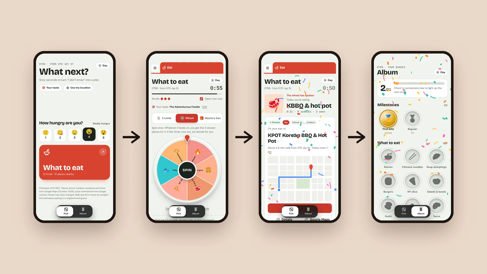
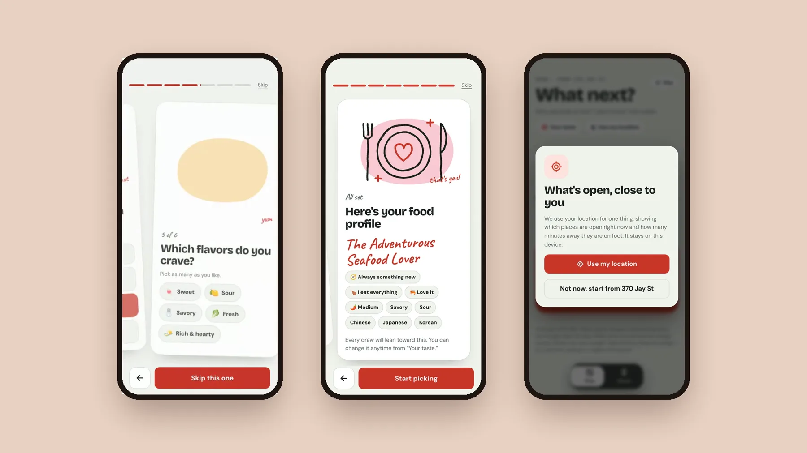
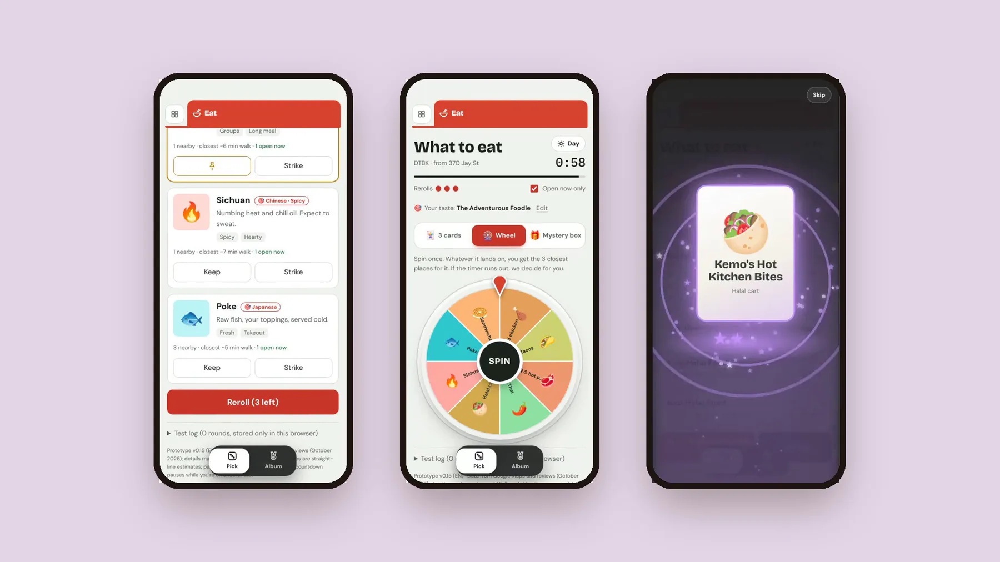
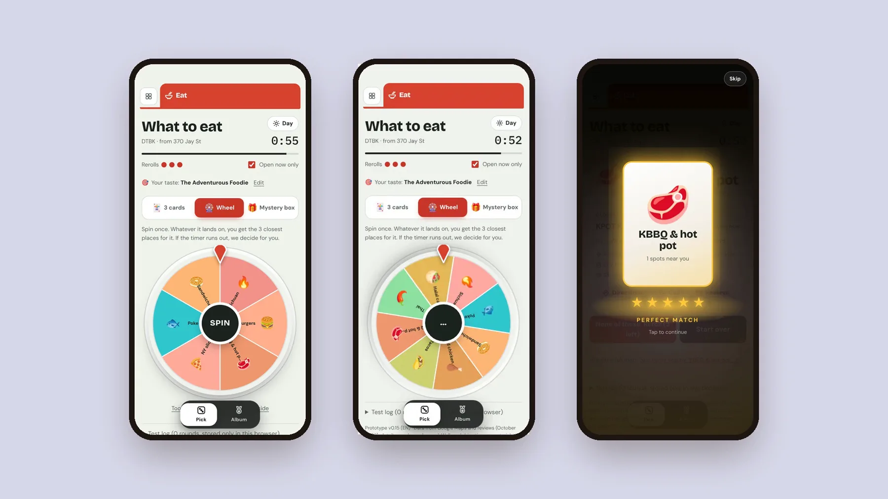
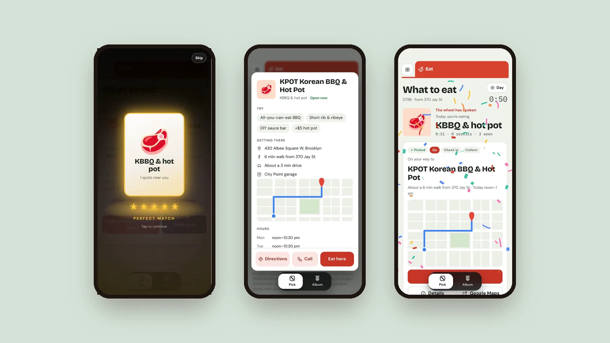
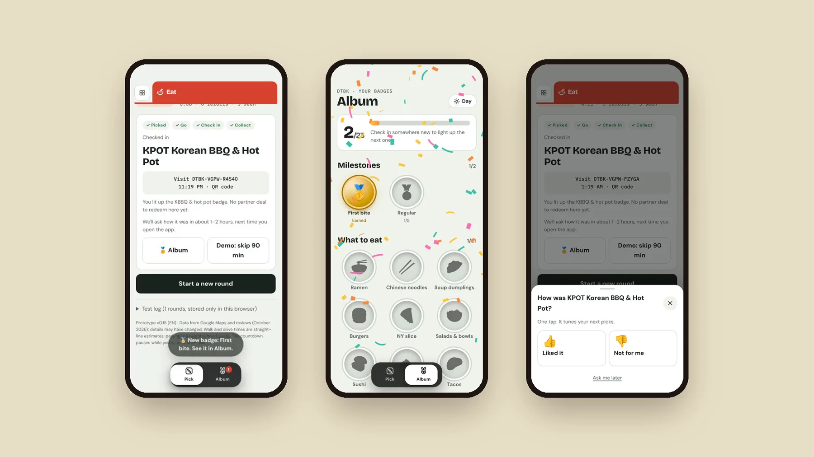
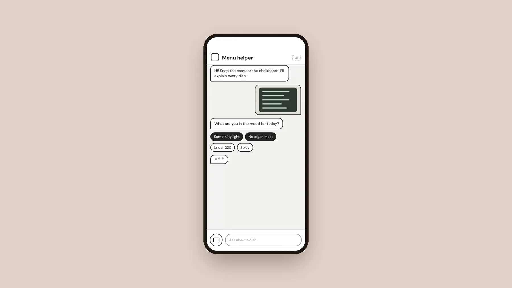
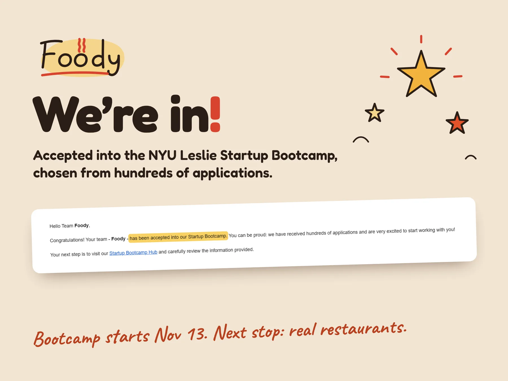

✳Foody: what to eat, decided.
Picking a place to eat turns into endless reviews and saved lists until hunger wins. Foody gives you three options, three rerolls and 60 seconds, then walks you to the door, checks you in and gives you a reason to come back.
Too many options.
No decision.
Deciding where to eat turns into scrolling reviews and saved lists until hunger wins. It hits hardest for students who are new to New York and don’t know the neighborhood yet.
Turn indecision into one decision.

Considered A, chose B.
From taste to the front door.

Start with what you like
A hand-lettered Foody draws itself in, then six sideways cards ask how you eat: new or familiar, seafood, diet, spice, flavors and cuisines.
The answers become a playful food profile, like “The Adventurous Seafood Lover,” and tilt every draw toward your taste.

Three ways to draw
Home asks one question first: how hungry are you? At 4 or 5, Foody offers to decide for you.
Otherwise swipe three cards, spin a wheel or open a mystery box. 60 seconds and three rerolls; when either runs out, Foody makes the call.

A reveal worth waiting for
Every result lands with a game-style reveal: a beam of light, a spinning card and a burst of stars.
Rarity reflects you: gold for a perfect match, purple for something new, blue for a solid pick.

From options to one place
Results show the closest places, nearest open one first. A card flips into details: dishes to try, walking time, hours and parking.
“Eat here” fires confetti and opens a route in the app, so the decision doesn’t end at a list.

Check in, collect, come back
Scan the restaurant’s QR code or check in by location. A visit code proves Foody sent you, and that verified visit is what restaurants pay for.
Each check-in lights up one of 23 badges. A few hours later, one tap asks how it was, and the answer shapes your next draw.

Next: order with confidence
Snap the menu or the chalkboard, and an AI menu helper explains every dish in plain words.
Tell it today’s mood, like something light or under $20, and it highlights what fits. Shown as a low-fidelity concept.
Try it yourself.
This is the working prototype (v0.15), running right on this page. The restaurants are a fixed snapshot of real places in Downtown Brooklyn.
Things to try- Watch the logo draw in, then answer the six taste cards.
- On Home, pick how hungry you are, then open “What to eat.”
- Swipe the cards, spin the wheel or open a mystery box.
- Tap a result card to flip it, then try “Eat here.”
- Use “Demo: simulate a scan” to check in and light up a badge.
Prototype. Distances are from 370 Jay St and check-in uses a simulated scan. Progress stays in this browser.
Shaped by testers.
We interviewed five NYU students and watched them play the prototype in person. In the first test, people only looked at the closest option and felt the flow ended the moment a place was chosen.
We’re in.
Foody was accepted into the NYU Leslie Startup Bootcamp, chosen from hundreds of applications. Next stop: real restaurants.

Better questions. Better next steps.
Build the AI menu helper and connect live ratings through the Google Places API.
The Gift Card Trap→